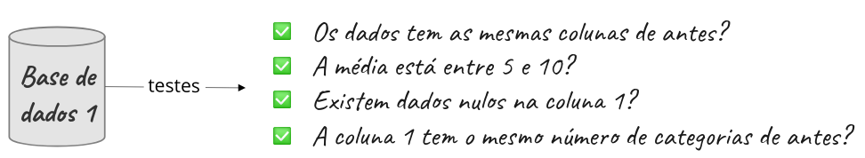
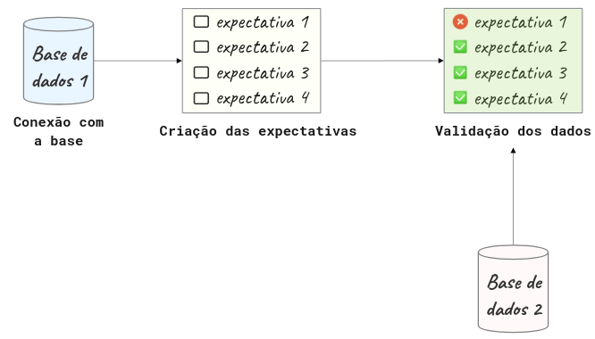
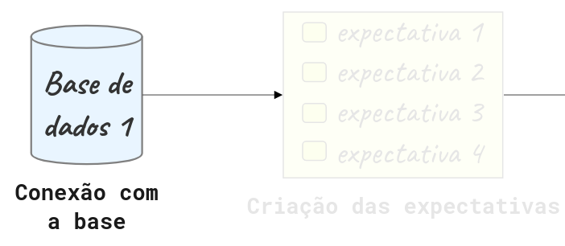

Great Expectations: saiba sempre o que esperar dos seus dados
Contents
4.1. Great Expectations: saiba sempre o que esperar dos seus dados¶
4.1.1. O que é o Great Expectations?¶
Great Expectations é uma biblioteca referência de Python que permite você validar, documentar e checar dados para garantir que eles estão conforme esperado.
Great Expectations passa por uma lista de checagem para garantir que os dados passem por todos os testes antes de serem utilizados.
Há inúmeras ferramentas disponíveis que permitem criar validações para os dados. Porém, a autora afirma gostar do Great Expectations pelos seguintes motivos:
Cria automaticamente um pipeline de testes para os dados: criar um pipeline de testes compreensivos para os dados pode ser uma tarefa árdua. Great Expectations elimina essa complexidade sugerindo alguns testes baseado nas características da própria base de dados.

Cria suas validações e configura a sua fonte de dados através de Jupyter Notebooks: Para algumas pessoas pode ser difícil criar validações de dados usando arquivos JSON. Great Expectations facilita a criação destas validações usando Jupyter Notebooks!
Cria uma documentação de dados: Great Expectations também cria uma documentação de fácil leitura que permite entender os dados e as validações de forma eficiente.

Possui integração simples com ferramentas que usam DAG: Great Expections integra facilmente com ferramentas baseadas em DAG como o Apache Airflow, dbt, Prefect, Dagster, Kedro, dentre outras.
Nesta seção:
Será apresentada uma introdução ao Great Expectations.
Também serão respondidas algumas perguntas sobre esta ferramenta.
Para instalar o Great Expectations, rode:
pip install great_expectations
4.1.2. Primeiros passos¶
4.1.2.1. Criando um contexto de dados (Data Context)¶
O chamado contexto de dados, ou Data Context em inglês, gerencia a configuração do seu projeto. Para criar um novo Data Context usando a API versão V3, rode:
$ great_expectations --v3-api init
E um novo diretório com o conteúdo da imagem abaixo será gerado no seu diretório atual!

Abaixo uma explicação de cada um destes diretórios e arquivos:
O arquivo
great_expectations.ymlcontém as principais configurações da implementação atual.O diretório
expectationsarmazena todas as validações como arquivos JSON.O diretório
pluginsarmazena os códigos para quaisquer plugins que possam eventualmente existir.O diretório
uncommitedcontém arquivos que não deveriam estar no controle de versionamento
4.1.2.2. Fluxo do Great Expectations¶
O Great Expectations geralmente inclui 3 etapas: conectar à base de dados, criar as expectativas e validar os dados.

Nas seções seguintes serão abordadas cada uma destas etapas.
4.1.3. Conectando à base de dados¶

Como demonstração, a autora escolheu dividir o dataset advertising, cuja origem é o Kaggle, em dois datasets: first_data.csv e second_data.csv, nos quais:
first_data.csvcontém dados de janeiro até abril de 2016second_data.csvcontém dados de maio até julho de 2016
Estes datasets estão no diretório data.
Para conectar à fonte de dados, rode:
$ great_expectations --v3-api datasource new